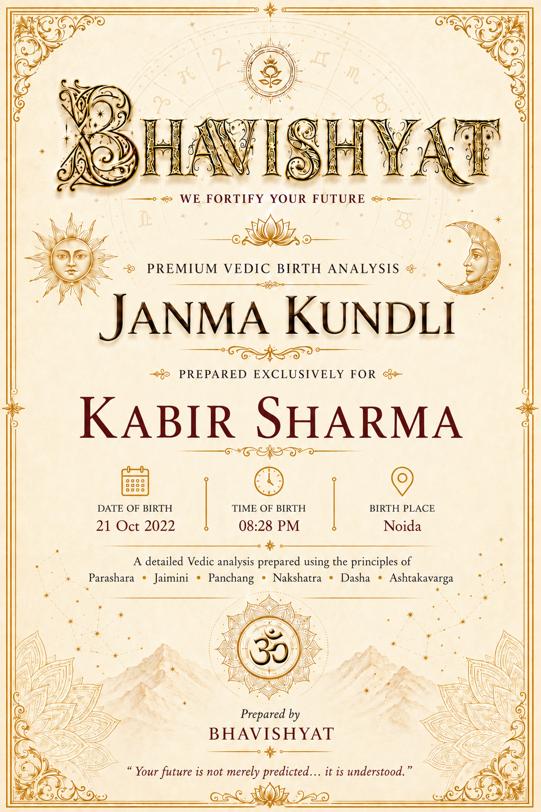
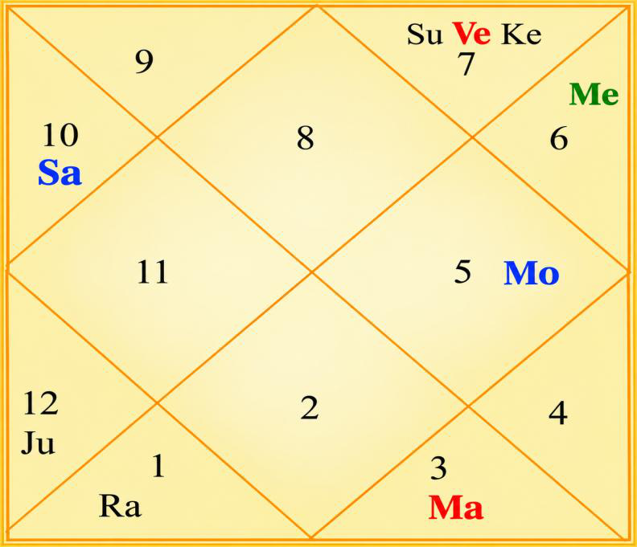

Janma Kundli • Mr. Kabir Sharma
Birth Details & Panchang
| Name | Mr. Kabir Sharma | Paksha | Krishna |
| Date of Birth | 21 October 2022 | Tithi | Dwadashi (12) |
| Time of Birth | 08:28 PM | Nakshatra | Purva Phalguni |
| Birth Place | Noida | Vaar | Friday |
| Longitude | 77°23' E | Yoga | Brahma |
| Latitude | 28°32' N | Karan | Kaulava |
| Ascendant | Scorpio | Asc Lord | Mars |
| Tithi Lord | Mercury | Tithi Deity | Vishnu |
| Nakshatra Lord | Venus | Nakshatra Deity | Bhaga (Prosperity) |
| Yoga Deity | Ashwini Kumara | Karan Deity | Yama |
| Yogi | Mars | Duplicate Yogi | Venus |
| Abhiyogi | Ketu | Dagdha Rashi | Libra (7), Capricorn (10) |
Natal Chart (Rashi)

| Planet Distribution | Evenly Distributed — latter part of life more eventful | ||
| Ascendant | Scorpio (Vrishchika) | Moon / Sun Sign | Leo (Simha) / Libra (Tula) |
| Malefic | Mercury, Venus | Shunya Nakshatra | Krittika, Mrigashira, Pushya, Magha |
| Maraka | Venus, Jupiter | Dasha Balance | 13Y 8M 8D |
| Badhaka | Moon (Chandra) | Mangalik | No |
| Birth Dasha | Ve-Ma-Ra (1-4-5) | ||
Janma Kundli • Mr. Kabir Sharma
Favourable Influences
| Benefic Years | 17, 19, 22, 26, 28, 31, 35, 37 | ||
| Favourable Days | Sunday, Monday, Tuesday | ||
| Favourable Planets | Sun, Moon, Mars | ||
| Favourable Signs | Aries (1), Leo (5), Capricorn (10) | ||
| Favourable Ratna | Coral, Yellow Sapphire | Favourable UpRatna | Carnelian, Red Jasper, Yellow Topaz, Citrine |
| Lucky Ratna | Pearl | Favourable Deity | Shankar |
| Favourable Metal | Copper, Silver | Favourable Colour | Brick Red |
| Direction | South | Favourable Cereals | Rice |
| Favourable Items | Molasses, Saffron, Musk, Red Sandal | ||
| Favourable Plant | Kadamba | Favourable Temple | Somnath Temple |
Planets in Rashi Chart
| Planet | Lordship | Sign | Nakshatra | Nak. Lord | Nak. Count | Nav Tara | Char Karak |
|---|---|---|---|---|---|---|---|
| Sun | 10L | Libra (7) | Chitra | Mars | 4 N | 2 | Putrakarak (5H) |
| Moon | 9L | Leo (5) | Purva Phalguni | Venus | 1 N | 3 | Bhratrikaraka (3H) |
| Mars | 6L, 1L | Gemini (3) | Mrigashira | Mars | 22 N | 4 | DaraKarak (7H) |
| Mercury | 8L, 11L | Virgo (6) | Hasta | Moon | 3 N | 8 | Amatyakarak |
| Jupiter | 2L, 5L | Pisces (12) | Uttara Bhadrapada | Saturn | 16 N | 6 | Matrikarak (4H) |
| Venus | 7L, 12L | Libra (7) | Chitra | Mars | 4 N | 1 | Gnatikarak (6H) |
| Saturn | 3L, 4L | Capricorn (10) | Dhanishtha | Mars | 13 N | 7 | Atmakarak (Life) |
| Rahu | — | Aries (1) | Bharani | Venus | 19 N | 5 | — |
| Ketu | — | Libra (7) | Swati | Rahu | 5 N | 9 | — |
| Debilitated Planet(s) | — | Combust Planet(s) | Mercury, Venus |
| Retrograde Planet(s) | Jupiter, Saturn | ||
Sarvastakvarga & Houses
| Very Strong (35+) | 3H | ||
| Strong (31-35) | 10H | ||
| Above Average (28-30) | 1H, 4H, 6H, 8H, 9H, 11H | ||
| Below Average (24-27) | 5H, 7H | ||
| Weak (21-23) | 2H, 12H | ||
| Very Weak (<21) | — | ||
Janma Kundli • Mr. Kabir Sharma
Houses in Rashi Chart
| House | Sign | Planets | SAV | Lords | Aspect |
|---|---|---|---|---|---|
| 1H | Scorpio (8) | — | 29 | — | Jupiter |
| 2H | Sagittarius (9) | — | 22 | — | Rahu |
| 3H | Capricorn (10) | Saturn | 36 | 3L, 4L | Mars |
| 4H | Aquarius (11) | — | 28 | — | Ketu |
| 5H | Pisces (12) | Jupiter | 24 | 2L, 5L | Saturn |
| 6H | Aries (1) | Rahu | 29 | — | — |
| 7H | Taurus (2) | — | 24 | — | — |
| 8H | Gemini (3) | Mars | 30 | 6L, 1L | Ketu |
| 9H | Cancer (4) | — | 29 | — | Jupiter |
| 10H | Leo (5) | Moon | 35 | 9L | Rahu |
| 11H | Virgo (6) | Mercury | 29 | 8L, 11L | Mars |
| 12H | Libra (7) | Sun, Venus, Ketu | 22 | 10L; 7L, 12L | Saturn |
Bhinnashtak Varga (BAV)
| Sign | Sa | Ju | Ma | Su | Ve | Me | Mo | Ra |
|---|---|---|---|---|---|---|---|---|
| 8 | 4 | 3 | 3 | 4 | 7 | 5 | 3 | 2 |
| 9 | 0 | 7 | 3 | 1 | 4 | 3 | 4 | 4 |
| 10 | 4 | 4 | 6 | 7 | 4 | 6 | 5 | 1 |
| 11 | 3 | 4 | 3 | 4 | 4 | 7 | 3 | 3 |
| 12 | 3 | 5 | 3 | 2 | 3 | 3 | 5 | 6 |
| 1 | 4 | 5 | 3 | 5 | 3 | 3 | 6 | 4 |
| 2 | 4 | 5 | 1 | 3 | 5 | 3 | 3 | 5 |
| 3 | 3 | 7 | 2 | 4 | 3 | 6 | 5 | 1 |
| 4 | 3 | 5 | 4 | 5 | 5 | 3 | 4 | 4 |
| 5 | 6 | 3 | 5 | 5 | 5 | 6 | 5 | 5 |
| 6 | 2 | 5 | 4 | 4 | 5 | 6 | 3 | 1 |
| 7 | 3 | 3 | 2 | 4 | 4 | 3 | 3 | 7 |
Janma Kundli • Mr. Kabir Sharma
Vimshottari Dasha
Maha Dasha
| Dasha Lord | From | To |
|---|---|---|
| Venus | 20-Jul-2016 | 20-Jul-2036 |
| Sun | 20-Jul-2036 | 20-Jul-2042 |
| Moon | 20-Jul-2042 | 19-Jul-2052 |
| Mars | 19-Jul-2052 | 20-Jul-2059 |
| Rahu | 20-Jul-2059 | 19-Jul-2077 |
| Jupiter | 19-Jul-2077 | 19-Jul-2093 |
| Saturn | 19-Jul-2093 | 20-Jul-2112 |
| Mercury | 20-Jul-2112 | 20-Jul-2129 |
| Ketu | 20-Jul-2129 | 20-Jul-2136 |
Antar Dasha (Venus Maha Dasha)
| AD Lord | From | To |
|---|---|---|
| Venus | 20-Jul-2016 | 19-Nov-2019 |
| Sun | 19-Nov-2019 | 18-Nov-2020 |
| Moon | 18-Nov-2020 | 20-Jul-2022 |
| Mars | 20-Jul-2022 | 19-Sep-2023 |
| Rahu | 19-Sep-2023 | 19-Sep-2026 |
| Jupiter | 19-Sep-2026 | 20-May-2029 |
| Saturn | 20-May-2029 | 20-Jul-2032 |
| Mercury | 20-Jul-2032 | 20-May-2035 |
| Ketu | 20-May-2035 | 20-Jul-2036 |
Pratyantar Dasha (Rahu Antar Dasha)
| P. Dasha | From | To |
|---|---|---|
| Mercury | 15-Jan-2025 | 19-Jun-2025 |
| Ketu | 19-Jun-2025 | 22-Aug-2025 |
| Venus | 22-Aug-2025 | 21-Feb-2026 |
| Sun | 21-Feb-2026 | 17-Apr-2026 |
| Moon | 17-Apr-2026 | 17-Jul-2026 |
| Mars | 17-Jul-2026 | 19-Sep-2026 |
| Jupiter | 19-Sep-2026 | 28-Jan-2027 |
| Saturn | 28-Jan-2027 | 01-Jul-2027 |
| Mercury | 01-Jul-2027 | 15-Nov-2027 |
| Ketu | 15-Nov-2027 | 11-Jan-2028 |
Janma Kundli • Mr. Kabir Sharma
Nav Tara Sequence
| Planet | Chara Karak | House | Lordship | Strength | Nakshatra | Lord | Placement |
|---|---|---|---|---|---|---|---|
| Venus | Gnatikarak (6H) | 12H | 7L, 12L | Weak (21-23) | Chitra | Mars | 8H |
| Sun | Putrakarak (5H) | 12H | 10L | Weak (21-23) | Chitra | Mars | 8H |
| Moon | Bhratrikaraka (3H) | 10H | 9L | Strong (31-35) | Purva Phalguni | Venus | 12H |
| Mars | DaraKarak (7H) | 8H | 6L, 1L | Above Avg (28-30) | Mrigashira | Mars | 8H |
| Rahu | — | 6H | — | Above Avg (28-30) | Bharani | Venus | 12H |
| Jupiter | Matrikarak (4H) | 5H | 2L, 5L | Below Avg (24-27) | Uttara Bhadrapada | Saturn | 3H |
| Saturn | Atmakarak (Life) | 3H | 3L, 4L | Very Strong (35+) | Dhanishtha | Mars | 8H |
| Mercury | Amatyakarak | 11H | 8L, 11L | Above Avg (28-30) | Hasta | Moon | 10H |
| Ketu | — | 12H | — | Weak (21-23) | Swati | Rahu | 6H |
Birth Chart Nav Tara Chakra
| Venus (Janam) | 1 | Moon | 10 | 19 | Rahu | |
| Sun (Sampat) | 2 | 11 | 20 | |||
| Moon (Vipat) | 3 | Mercury | 12 | 21 | ||
| Mars (Kshem) | 4 | Sun, Venus | 13 | Saturn | 22 | Mars |
| Rahu (Pratyari) | 5 | Ketu | 14 | 23 | ||
| Jupiter (Sadhak) | 6 | 15 | 24 | |||
| Saturn (Nidhan) | 7 | 16 | Jupiter | 25 | ||
| Mercury (Mitra) | 8 | 17 | 26 | |||
| Ketu (Ati Mitra) | 9 | 18 | 27 |
Important Saturn Transits
| 1st Sade Sati | 13 Jul 2034 – 26 Sep 2041 | ||
| 2nd Sade Sati | 24 Aug 2063 – 04 Nov 2070 | ||
| 3rd Sade Sati | 02 Jul 2093 – 16 Sep 2100 | ||
| Kantak Shani | 29 Apr 2022 – 12 Jul 2022; 17 Jan 2023 – 29 Mar 2025 | ||
Janma Kundli • Mr. Kabir Sharma
Other Important Transits
| Type | Planet | House | SAV | From | To |
|---|---|---|---|---|---|
| Good | Saturn | 3H | 36 | 17 Jan 2023 | 02 Jun 2027 |
| Saturn | 3H | 36 | 14 May 2025 | 30 Oct 2026 | |
| Jupiter | 8H, 9H | 30, 29 | 14 May 2025 | 30 Oct 2026 | |
| Challenging | Saturn | 12H | 22 | 29 Jan 2041 | 12 Dec 2043 |
| Jupiter | 12H | 22 | 26 Dec 2028 | 29 Mar 2029 | |
| Rahu | 2H | 22 | 23 Jun 2028 | 11 Jan 2030 | |
| Ketu | 8H | 30 | 23 Jun 2028 | 11 Jan 2030 |
Lal Kitab Birth Chart
| HN | Rashi | Planets | Varshphal Yr 4 21 Oct 2025 – 20 Oct 2026 |
Varshphal Yr 5 21 Oct 2026 – 20 Oct 2027 |
|---|---|---|---|---|
| 1 | Scorpio (8) | — | — | Jupiter |
| 2 | Sagittarius (9) | — | Mercury | Mars |
| 3 | Capricorn (10) | Saturn | — | — |
| 4 | Aquarius (11) | — | Saturn | — |
| 5 | Pisces (12) | Jupiter | — | Rahu |
| 6 | Aries (1) | Rahu | — | Moon |
| 7 | Taurus (2) | — | Moon | Mercury |
| 8 | Gemini (3) | Mars | — | Saturn |
| 9 | Cancer (4) | — | Rahu | — |
| 10 | Leo (5) | Moon | Jupiter | Sun, Venus, Ketu |
| 11 | Virgo (6) | Mercury | Mars | — |
| 12 | Libra (7) | Sun, Venus, Ketu | Sun, Venus, Ketu | — |
Janma Kundli • Mr. Kabir Sharma
Part B — Panchang Insights
| Tithi — Krishna Dwadashi | Favours prosperity and well-being; can give passive-aggression, controlling nature, escapism and dependency. Makes the native active and passionate — good at planning and scheming. Wants to dominate and overshadow. Should be careful of attachment and self-sacrifice for charity and welfare of others. Avoiding laziness is a good lifestyle remedy. Worshipping Lord Vishnu enhances the positive energy of this Tithi and ensures riches and wealth. Offer Tulsi to Lord Vishnu. |
| Moon | The natal Moon is not Paksha Bali — around 25% luminous. Advisable for the native to perform Ganga Snan. |
| Vaar — Friday | Gives comfort, luxury and opulence. Makes the native charming, artistic and sociable. Chanting Sri Suktam and worshipping Goddess Parvati is advised if there is problem in family or financial wastage / imbalance. |
| Nakshatra — Purva Phalguni | Likes an independent working style; fond of travelling; dedicated towards work; honest; strives for fame and power. Career switches more often. Good communication skills; interest in music and art; favours multiple sources of income. People may perceive the native as arrogant. |
| Yoga — Brahma | Favours specialisation in a subject-matter, skilled hands and healing energy. |
| Dagdha Rashi — 7, 10 | Visit a Shani temple and light a mustard oil lamp to pacify Saturn. |
Janma Kundli • Mr. Kabir Sharma
Rashi Chart Overview
| Planet Distribution | As per planetary distribution in the Rashi chart, the latter part of life would be more eventful. |
| Kal Sarp | There is no Kal Sarpa Dosh in the chart. |
Nature, Personality & Appearance — Ascendant Scorpio
| Core Nature | Speaks sweetly; smart at talking. Secretive and difficult to understand; may become extremely selfish. Competitive nature with a strong ability to win. Mysterious, transformative, emotional, determined and intuitive. |
| Physical Features | Middle stature, well-proportioned body, broad face and prominent chin. |
| Lifestyle | Loves mysteries, research, occult sciences and deep-water places; dislikes betrayal and superficiality. |
| More About Ascendant | Strong willpower and authoritative qualities. Inexhaustible energy. Prefers thorough understanding. Good executive ability and confidence. Reputation for secretive actions. Excellent researcher; works best independently. |
| Weakness | Jealous, controlling, obsessive and revengeful. |
Moon Sign — Leo
| Emotional Nature | Royal, confident, proud, generous and a natural leader. Loves attention, power and creativity. Ambitious, charismatic, leadership-driven, brave, authoritative, inspiring and dominant. Can be attention-seeking, egoistic, stubborn and dramatic. Drawn to politics, entertainment and business. Recognition-oriented with strong wealth yogas; loves luxury and the spotlight; dislikes being ignored. Voracious reader. Fond of pleasure and luxury even with limited resources. East direction is auspicious for travel or work. |
Janma Kundli • Mr. Kabir Sharma
Impact of Planetary Placements
- Does not like to communicate with many people. Good for skill-related work — programming, graphic design, project management, data analysis, creativity and innovation.
- Electric equipment keeps giving problems — short circuit, electric fire, MCB trip etc.
- Good and big friend circle. Good advisor; good for income; wealth yoga. Loves to travel; energetic.
- Good for education and wealth. Learned; God fulfils wishes.
- Good for wealth; winning in competition. Gets loans easily. Intelligent and successful.
- Mentally challenged person either in the family or nearby the residence.
- Sharp-minded; good for wealth, trade and negotiation. Healthy and quick at learning. Practical approach in life; loves to take challenges.
- Yoga for prolonged health issues to mother or some family member.
Janma Kundli • Mr. Kabir Sharma
Impact of Planetary Placements (contd.)
Planetary Combinations
- Surya Grahan in the Rashi chart. Differences with father in the relevant Dasha. Problems from government / authorities; problems with boss or superiors. Likelihood of wastage of money in legal matters in the relevant Dasha.
- Workaholic nature; focus on knowledge and materialistic things.
- Feed 100 kg grass to cows on Makar Sankranti (14 Jan) every year.
Janma Kundli • Mr. Kabir Sharma
12 Houses of Rashi Chart
- Secretive, mysterious, stubborn, egoistic and research-oriented; expert in taking revenge. Limelight may follow sadness or problem. Keeps lots of secrets. Should not ignore intuition. Big changes in life, several times.
- Lucky for family. Wise in money matters and finance. Wealth through foreign connections. Food habit important for the native.
- Takes responsibility of siblings. Long-lasting friends. Delays in action and courage; much time spent in preparation and planning.
- Gains through house, property and vehicle.
- Education at a distant place, with a good sum spent on education and pursuing hobby. Interest in reading spiritual texts and learning meditation. Happy with self / in alone time.
- Competition and dispute at workplace. Focused on health; active routine.
- Wealth through collaboration, partnership and business.
- Be careful in communication and paperwork. Likes to read mysterious novels and has interest in mysterious things.
- Attachment with father, teacher and guru. Lots of long-distance travels.
- Creative and innovative in work.
Sarvashtakvarga — Yearly Outlook
| Challenging Years | 8, 39 | ||
| Good Months of the Year | January – February, April – May, June – July, August – September | ||
| Auspicious Months (ceremony, puja etc.) | June – July | ||
| Challenging Months of the Year | March – April, October – November, December – January | ||
| Favourable for Starting New Education | June – July | ||
| Lucky People for Native | Aries (1), Leo (5), Capricorn (10) | ||
| Unfavourable People for Native | Libra (7), Aquarius (11) | ||
| Aptitude | Good analytical skills; ability to win competitions; yoga for high success in profession; workaholic nature; gradual rise in life | ||
| Favourable Direction for Opening a Bank Account | East of birth place / residence | ||
| Wealth-Giving Dasha / Antardasha | Rahu, Moon, Mars, Ketu, Mercury, Jupiter | ||
| Key Growth Window | Jupiter Antar Dasha (Sep 2026 – May 2029) — favourable for gain of wealth in the family | ||
Janma Kundli • Mr. Kabir Sharma
12 Houses of Rashi Chart (contd.)
- Earning and wealth creation through others' loss — such as debt, loan and interest. Selective about friend circle.
- Spends more on luxury and comfort. Keeps personal room beautiful.
- Big changes in life several times; multiple times transformation in whole personality.
- Wealth yoga. Earnings through speculation, consultancy and knowledge-based work.
- Good at learning skills; persistence; good neighbourhood. Ability to take initiative.
- Mother is strong and dominant-natured. Neighbourhood impacts peace of mind. Frequent changes of residence; property-related issues.
- Good for education, intelligence and vision. Lots of knowledge; creativity; mantra siddhi ability; good problem solver. Resilience.
- Viprit Raj Yog — problems get destroyed. Perseverance in tough times will give rise to the native.
Janma Kundli • Mr. Kabir Sharma
12 Houses of Rashi Chart (contd.)
- Indicates commission work or business related to foreign / import / export.
- Sudden gains of money promised in the chart; fluctuation in earning.
- Luck favours in career. Career rise during Moon Dasha. Wisdom at work; good decision making.
- Change in career frequent, or frequent transfer / lots of travel in career. May like to work alone or as per own terms.
- Supports fulfilment of desires, earnings, innovation skills and the ability to solve problems in a unique way.
- Good for investment, spirituality and meditation. Spending nature.
Karmic Remedies — Lal Kitab
- Donate food to ants.
- Having meals in the kitchen is favourable.
- Avoid taking tabeez (amulet).
- Feed dogs.
- Avoid donation in the evening; make donation at noon.
- May recite Narasimha Kavach Stotra.
- Never gift pens, pencils, stationery or mobile phones to anyone.
- Throw away copper utensils. Keep the bed in good condition — not dirty or broken.
- Don't reuse old items in the construction of / in a new house.
Abbreviations
A Sacred Dedication
With Love & Blessings
for Mr. Kabir Sharma's journey ahead
दुःखेष्वनुद्विग्नमनाः सुखेषु विगतस्पृहः।
वीतरागभयक्रोधः स्थितधीर्मुनिरुच्यते॥ ५६॥
दुःखों में जिसका मन विचलित नहीं होता, सुखों में जो स्पृहा-रहित रहता है, और जो राग, भय तथा क्रोध से रहित है — वही स्थितप्रज्ञ मुनि कहा जाता है।
"One whose mind remains undisturbed amidst misery, who does not crave pleasures, and who is free from attachment, fear and anger — such a person is called a sage of steady wisdom."
— Bhagavad Gita, Chapter 2, Verse 56
May Mr. Kabir Sharma grow into the steadiness his Scorpio depth was born to master — unshaken in hardship, ungrasping in joy, and free of the attachment, fear and anger that would dim his light. May his Leo radiance serve a calm and courageous heart, and may every transformation lift him closer to the quiet strength of a sthitadhi.